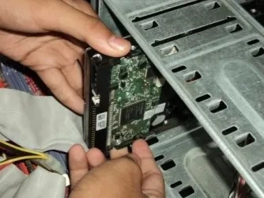
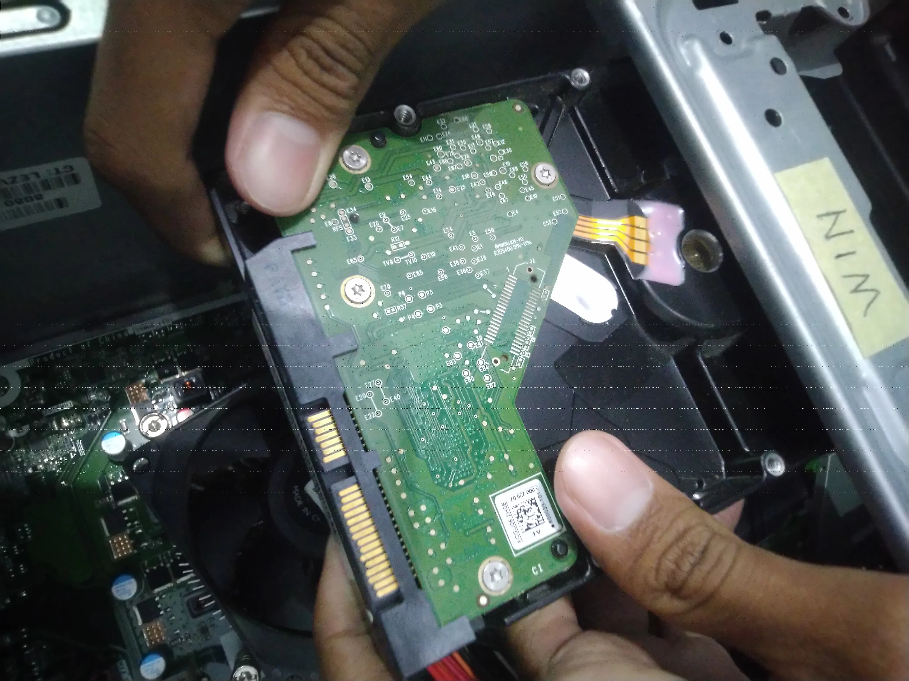
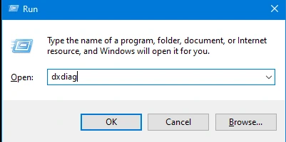

Clone HDD adalah proses menggandakan isi hard disk yang sudah terisi dengan data. Proses ini biasanya dilakukan untuk memindahkan data dari hard disk lama ke hard disk baru. Berikut adalah langkah-langkah untuk melakukan clone HDD.
Langkah-langkah clone hard disk via Docking Station
- Persiapan
- Pembongkaran
- Proses
- Pemasangan
- Pengujian
- Penanganan masalah

1. Persiapan
Sebelum melakukan proses clone HDD, lakukan pengamatan terhadap komponen-komponen yang ada di dalam komputer serta menghafalkan letak dari komponen tersebut satu per satu, dan juga mempersiapkan alat-alat yang diperlukan untuk melakukan pembongkaran dan penyalinan HDD komputer, seperti : obeng (+/-) dan alat clone
3. Proses
- Ambil hard disk yang mau di clone

- Masukan kedua hard disk tersebut Ke dalam alat clone

- Tekan Tombol ON untuk start
- Setelah indikator alat 100% alat akan berbunyi
4. Pemasangan
Setelah selesai pasang hard disk ke PC

Pasang kabel untuk hard disk

5. Pengujian
Nyalakan pc
 Coba ketik WIN + R "dxdiag"
Coba ketik WIN + R "dxdiag"

Tampilan kurang lebih seperti ini
 Anda dapat melihat isi hardisk yang sama dengan sumber hardisk yang dipakai untuk clone
Anda dapat melihat isi hardisk yang sama dengan sumber hardisk yang dipakai untuk clone
6. Penanganan masalah
- Menemukan dan melihat masalah
- Memsatikan kabel hardisk tertancap dengan benar
- Pastikan hardisk yang dipakai sumber berfungsi dengan baik
- Mengulangi proses clone